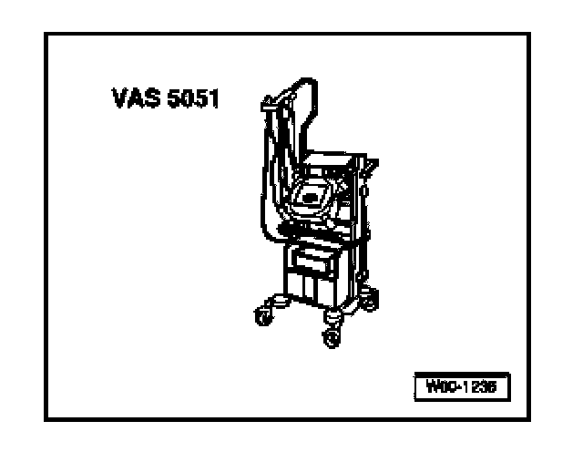

Programming and Relearning
Multi-function Steering Wheel Components, Adaptation
Special tools, testers and auxiliary items needed

- VAS 5051 Vehicle Diagnostic Testing and Information System
- Optional: VAS 5052 Vehicle Diagnostic and Service System
- Diagnostic cable VAS 5051/5a/6a or VAS 5052/3
- Select "Guided Fault Finding"
Once all Control Modules have been interrogated:
- Press "Goto" button
- Select "Function/Component Selection "
- Select "Body (Repair Group 01; 27; 50 to 97)"
- Select "Electrical System (Repair Group 01; 27; 90 to 97)"
- Select "01 - Systems capable of self-diagnosis"
- Select "Steering wheel electronics"
- Select "Steering wheel electronics functions"
- Select "Coding control module steering wheel electronics"
- Follow testers prompts